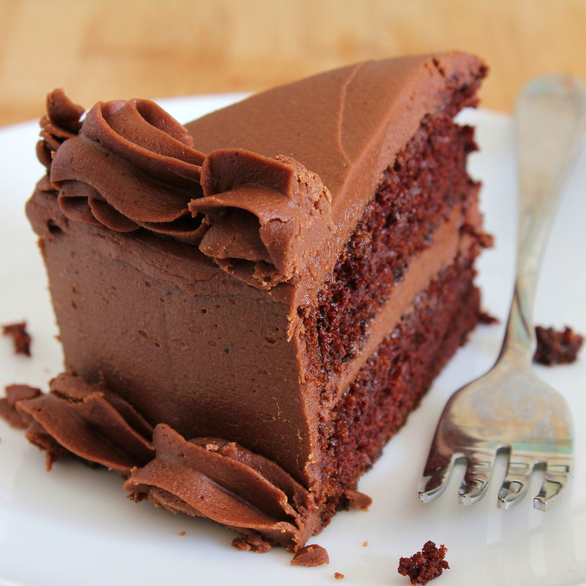

Chocolate Mousse

Chocolate Mousse ghaniya 3ani ta3rif
Ingredients :
- 1 (3.9 ounce) package instant chocolate pudding mix
- 1½ cups milk
- 1 (16 ounce) container frozen whipped topping, thawed
Steps:
- Prepare the pudding in a large bowl using 1 1/2 cups milk instead of the suggested 2 cups.
- Fold in the whipped topping until blended. Refrigerate until chilled and serve.Fold in the whipped topping until blended. Refrigerate until chilled and serve.Fold in the whipped topping until blended. Refrigerate until chilled and serve.Fold in the whipped topping until blended. Refrigerate until chilled and serve.